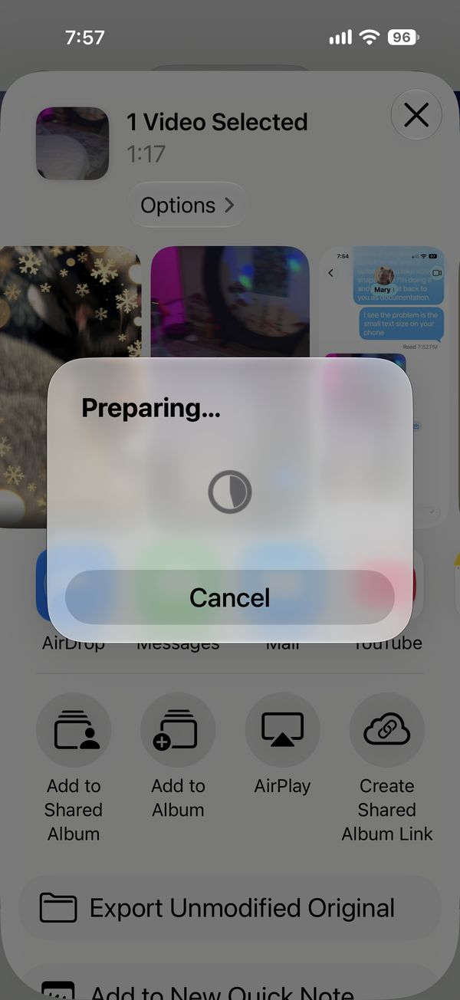

iOS gets the video ready for YouTube. Longer videos take a bit more time. Tap Cancel only if you picked the wrong video.

Step 2 of 12
iOS gets the video ready for YouTube. Longer videos take a bit more time. Tap Cancel only if you picked the wrong video.
